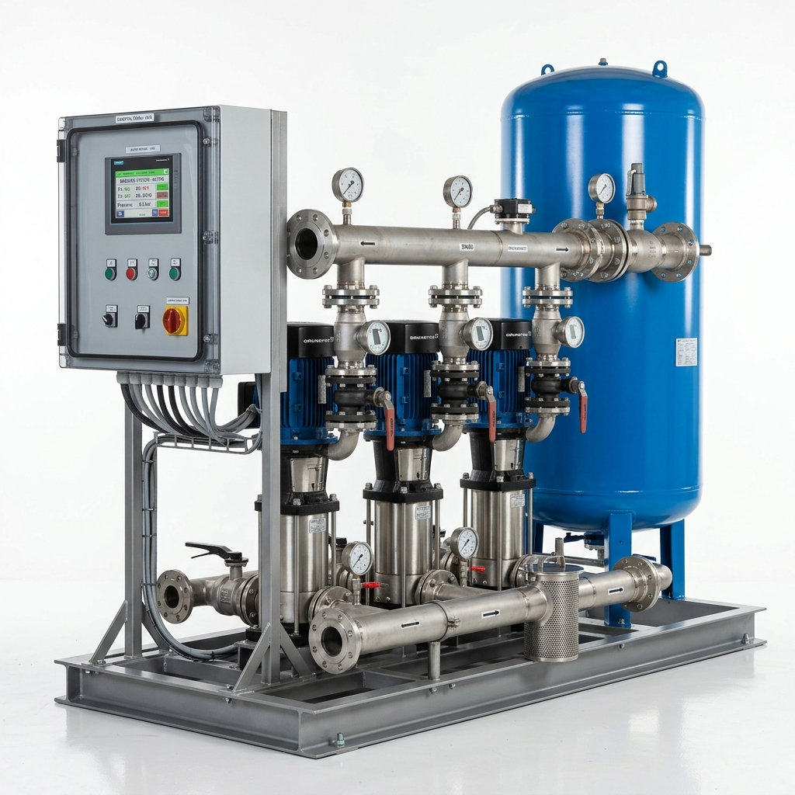
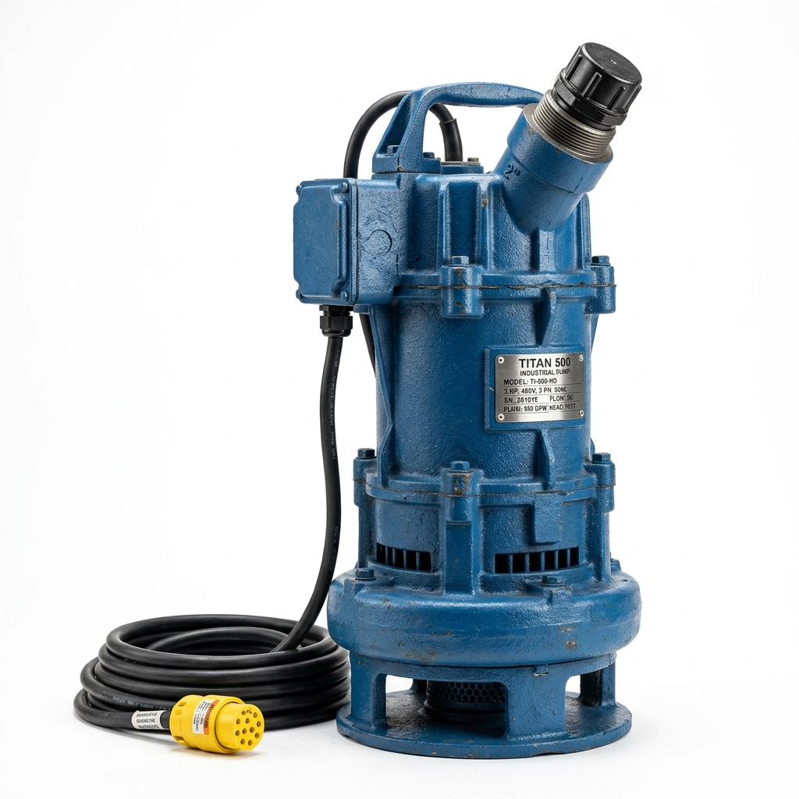
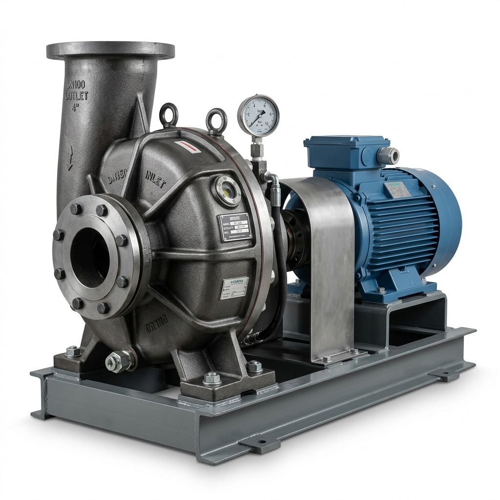
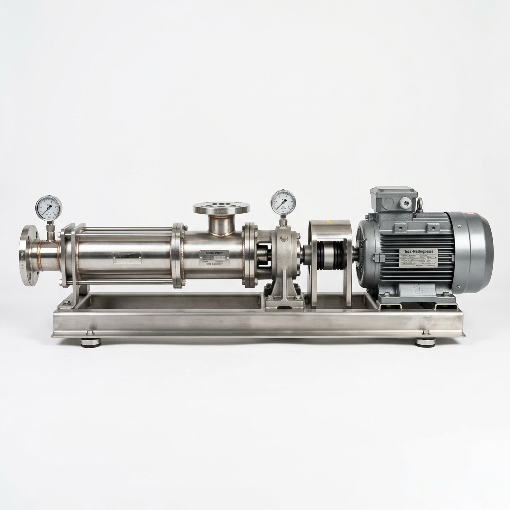
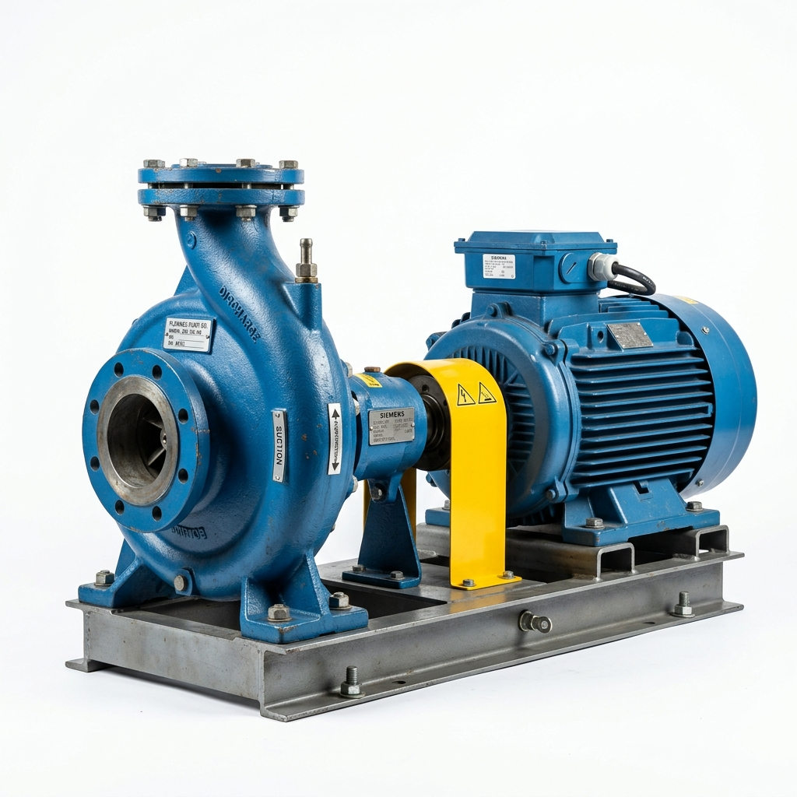

다양한 산업 현장에 최적화된 고품질 워터펌프
엄격한 품질 관리로 완성된 비에이텍의 주요 제품군을 소개합니다.

급수 라인의 일정한 압력을 유지시켜 안정적인 물 공급이 가능하며 고층 건물 및 산업 단지에 적합합니다.

완전 방수 모터가 장착되어 물 속에서 직접 작동하며, 배수 및 상하수도 시스템에 탁월한 성능을 발휘합니다.

점성이 높거나 고형물이 섞인 유체를 막힘 없이 이송할 수 있어 오폐수 처리 및 산업용 슬러지 처리에 특화되어 있습니다.

일정한 유량 공급이 필요한 정밀 공정에 유리하며 진동과 소음이 적은 고효율 펌프입니다.

구조가 단순하고 견고하여 유지보수가 용이하며, 일반적인 급수 및 배수 용도로 널리 사용됩니다.